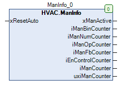

ManInfo (FB)¶
FUNCTION_BLOCK ManInfo EXTENDS LAT.Element IMPLEMENTS IManInfoProtocol, IMan
Short Description¶
Status display for manual override of functional blocksTypical application: Creation of a user instructions in case of manual override
Portrayal¶

Interfaces¶
Inputs¶
Name Datatype
Range
Init-Value
Functional Description
xResetAuto BOOL Reset operation
Outputs¶
Name Datatype
Range
Init-Value
Functional Description
xManActive BOOL FALSE Status display - Manual override
iManBinCounter INT 0 Number of binary manual overrides
iManNumCounter INT 0 Number of numerical manual overrides
iManOpCounter INT 0 Number of manual override at the operating mode selector switches
iManFbCounter INT 0 Number of function blocks in manual mode
iEnControlCounter INT 0 Number of deactivated function releases
iManCounter INT 0 Total number of manual overrides
udiManCounter CAA.COUNT
Number of monitored slave function blocks
Functional Description¶
General¶
Reset input xResetAuto¶
xManActive status display - manual overrides¶
iManBinCounter number of binary manual overrides¶
iManNumCounter number of numeric manual overrides¶
Number of manual overrides on the mode selector switches iManOpCounter¶
iManFbCounter number of function blocks in manual mode¶
iEnControlCounter number of deactivated function enables¶
iManCounter total number of manual overrides¶
udiManCounter¶
Visualization¶
Codesys¶
- InOut:
Scope Name Type Initial Comment Input xResetAuto BOOL Reset operation
Output xManActive BOOL 0 Status display - Manual override
iManBinCounter INT 0 Number of binary manual overrides
iManNumCounter INT 0 Number of numerical manual overrides
iManOpCounter INT 0 Number of manual override at the operating mode selector switches
iManFbCounter INT 0 Number of function blocks in manual mode
iEnControlCounter INT 0 Number of deactivated function releases
iManCounter INT 0 Total number of manual overrides
udiManCounter CAA.COUNT Number of monitored slave function blocks